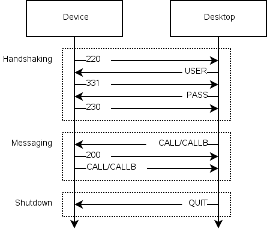

|
Qt Extended Home · Index · Classes · Headers · Overviews | |
This page describes how the qdsync protocol works. Individual commands are documented below.
The qdsync protocol is a line-oriented protocol that can be implemented on top of a socket. It consists of a number of required commands and some optional commands.
While there is no formal state machine there is an expected order of message arrival. The basic process looks like this.

Additionally, once the desktop has sent the HELPER_INIT message the device expects to receive a message of some kind within the specified duration period. The HELPER_PING and HELPER_ACK commands exist for this purpose. The HELPER_QUIT command is used by the device to indicate failure to send a command in the specified time.
| 200 | 200 Command okay |
|---|---|
| 211 | 211 Have a nice day! |
| 220 | 220 Qtopia 4.3.0;key=value;key=value |
| 230 | 230 User logged in, proceed |
| 331 | 331 User name ok, need password |
| 500 | 500 Syntax error, command unrecognized |
| 502 | 502 Command not implemented |
| 530 | 530 Please login with USER and PASS |
| 599 | 599 ChannelNotRegistered QPE/Channel |
| CALL | CALL QPE/System execute(QString) addressbook |
| CALLB | CALLB QPE/System execute(QString) BASE64DATA |
| HELPER_ACK | HELPER_ACK |
| HELPER_INIT | HELPER_INIT 5000 1 1 |
| HELPER_PING | HELPER_PING |
| HELPER_QUIT | HELPER_QUIT |
| PASS | PASS password |
| QUIT | QUIT |
| USER | USER username |
See also Overviews.
| Copyright © 2009 Trolltech | Qt Extended Sync Agent Documentation |